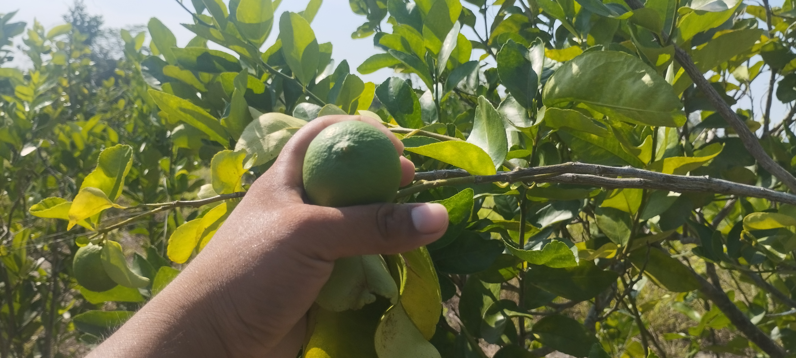
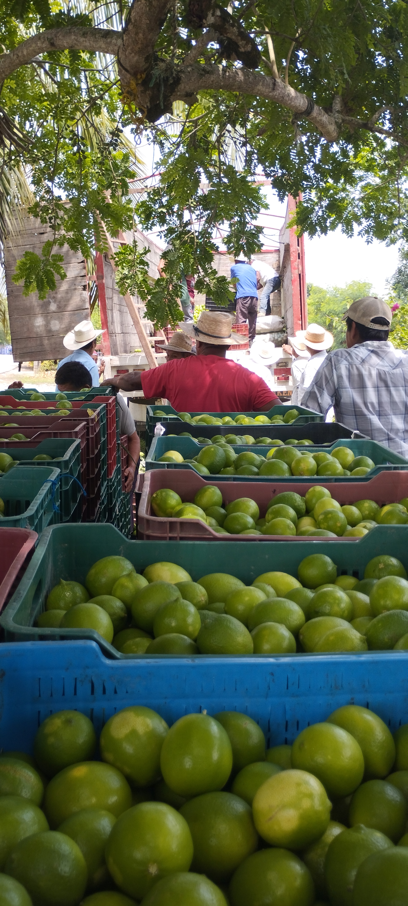
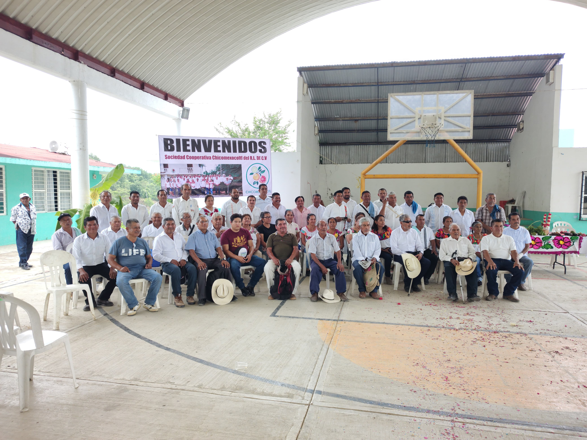
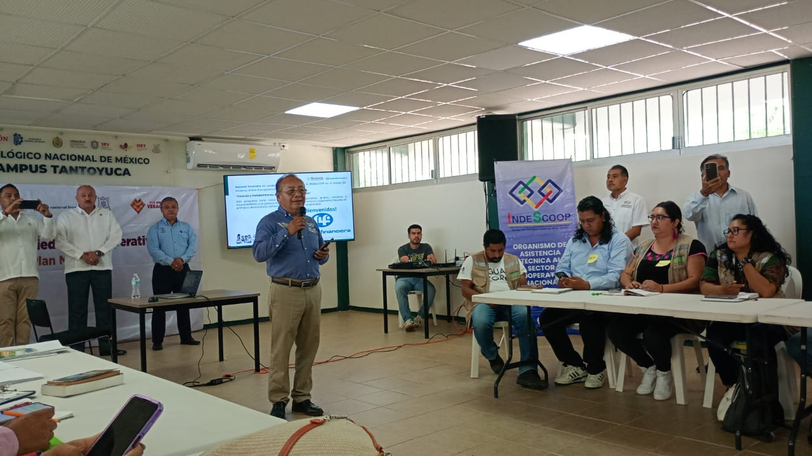
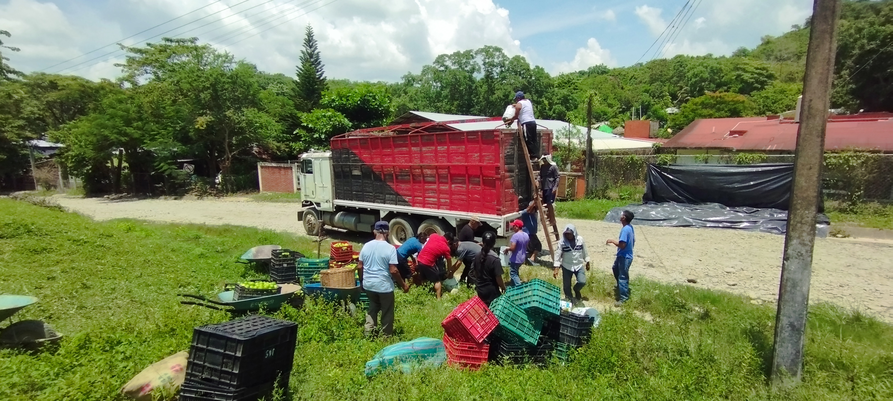

Sociedad Cooperativa de Responsabilidad Limitada de Capital Variable
Producción y comercialización agrícola
Trabajamos de manera cooperativa para fortalecer la producción y comercialización de productos agrícolas, vinculando a nuestros productores con oportunidades de mercado.
Nuestros productos
Trabajamos con productores de la región para reunir, preparar y comercializar productos agrícolas de acuerdo con las necesidades de nuestros compradores.
🍋 Limón persa
Uno de nuestros principales productos de trabajo. La cooperativa realiza acopio, selección, clasificación y comercialización.
Producto comercializado🌰 Achiote
Producto de temporada que hemos acopiado y comercializado de acuerdo con los requerimientos del comprador.
Producto comercializado🍊 Naranja
Producto presente entre nuestros productores, con primera compra y comercialización prevista para diciembre de 2026.
En desarrollo comercial🍊 Toronja
Producto presente entre nuestros productores, actualmente en proceso de desarrollo para su futura comercialización.
En desarrollo comercial🍌 Plátano
Producto presente entre nuestros productores, con posibilidades de comercialización conforme exista producción y demanda.
En desarrollo comercialNosotros
CHICOMEXOCOTL surgió a partir del impulso de Sembrando Vida y de la necesidad de que los productores de la región pudieran organizarse para mejorar la comercialización de sus productos y reducir la dependencia de intermediarios.
A partir de esta iniciativa, un grupo de productores interesados en trabajar de manera organizada decidió formar una cooperativa. La decisión de trabajar como cooperativa nació de una idea fundamental: unir la producción para tener mayor capacidad de atender las necesidades del mercado.
El limón persa se convirtió en uno de los primeros productos de trabajo de la cooperativa debido a la importante presencia de este cultivo en la región de Chicontepec. Además, los productores cuentan con otros productos agrícolas como achiote, naranja y plátano.
Durante 2026, CHICOMEXOCOTL comenzó sus primeras comercializaciones con Indumesa, dando sus primeros pasos en la vinculación con compradores y en la organización de los procesos necesarios para atender la demanda.
Hacia dónde vamos
Buscamos consolidarnos como una cooperativa rentable y organizada, generar oportunidades para nuestros integrantes y fortalecer la comercialización de productos agrícolas regionales.
Comercialización
Vinculamos la producción de nuestros socios con empresas interesadas en adquirir productos agrícolas de la región.
Solicitud del comprador
El comprador nos indica el producto, la cantidad, las características requeridas y la fecha aproximada.
Verificación de disponibilidad
Revisamos con nuestros productores si contamos con la cantidad necesaria para atender la solicitud.
Acopio
Organizamos la recepción del producto en un punto estratégico de acuerdo con su disponibilidad.
Selección y preparación
Seleccionamos y preparamos el producto de acuerdo con las características solicitadas por el comprador.
Transporte y entrega
Coordinamos el transporte, ya sea mediante un vehículo contratado por la cooperativa o enviado por el comprador.
¿Eres comprador?
Si estás interesado en adquirir productos agrícolas, puedes enviarnos tu solicitud comercial.
Solicitar información comercialSolicitud de información comercial
Si estás interesado en adquirir nuestros productos, compártenos los siguientes datos para conocer tu requerimiento.
Nuestro trabajo
En CHICOMEXOCOTL trabajamos de manera organizada con nuestros productores para identificar oportunidades de comercialización, reunir la producción necesaria y atender las solicitudes de nuestros compradores.
Organización con productores
Cuando surge una oportunidad de comercialización, comunicamos los requerimientos y revisamos con nuestros productores quiénes cuentan con disponibilidad para aportar producto.
Acopio
Organizamos la recepción del producto en un punto estratégico de acuerdo con la ubicación y disponibilidad de la producción. Entre los puntos utilizados se encuentran Pichucoyo y Aguateno.
Selección y preparación
El producto se selecciona y prepara de acuerdo con los requerimientos del comprador. En el caso del limón, se clasifica por color, tamaño y calidad.
Organización y decisiones
La Mesa Directiva coordina las actividades y presenta alternativas, mientras que las decisiones importantes se llevan a la Asamblea de acuerdo con las reglas de la cooperativa.
Seguimiento y capacitación
Aun cuando no existe una venta en proceso, continuamos con reuniones, organización, seguimiento y actividades de capacitación para fortalecer el trabajo de la cooperativa.
La Cooperativa
CHICOMEXOCOTL, Sociedad Cooperativa de Responsabilidad Limitada de Capital Variable, es una organización constituida por productores que trabajan de manera conjunta para fortalecer la producción, organización y comercialización de productos agrícolas.
48 socios
La cooperativa está integrada por 48 socios que participan en el desarrollo de sus actividades.
Asamblea General
Es la máxima autoridad de la cooperativa y participa en las decisiones importantes relacionadas con su funcionamiento.
Mesa Directiva
Coordina las actividades de la cooperativa, presenta alternativas y da seguimiento a los asuntos de organización y comercialización.
Consejo de Vigilancia
Supervisa y revisa aspectos relacionados con la administración, documentación y funcionamiento de la cooperativa.
Comisiones
La cooperativa cuenta con comisiones relacionadas con la capacitación, enseñanza, formación y previsión social.
Nuestro compromiso
Fortalecer la participación de nuestros socios, mejorar las capacidades de producción y comercialización y generar mayores oportunidades para los productores de la región mediante el trabajo organizado y colectivo.
Galería
Conoce algunas de las actividades, reuniones y procesos que forman parte del trabajo de CHICOMEXOCOTL.

Trabajo en campo

Acopio y selección

Reuniones y organización

Capacitaciones

Comercialización
Contacto
Si deseas conocer nuestros productos, realizar una solicitud comercial o establecer contacto con la cooperativa, puedes comunicarte con nosotros.
CHICOMEXOCOTL
Genaro Pérez Lagos
Teléfono / WhatsApp: 746 111 7087
Chicontepec, Veracruz, México